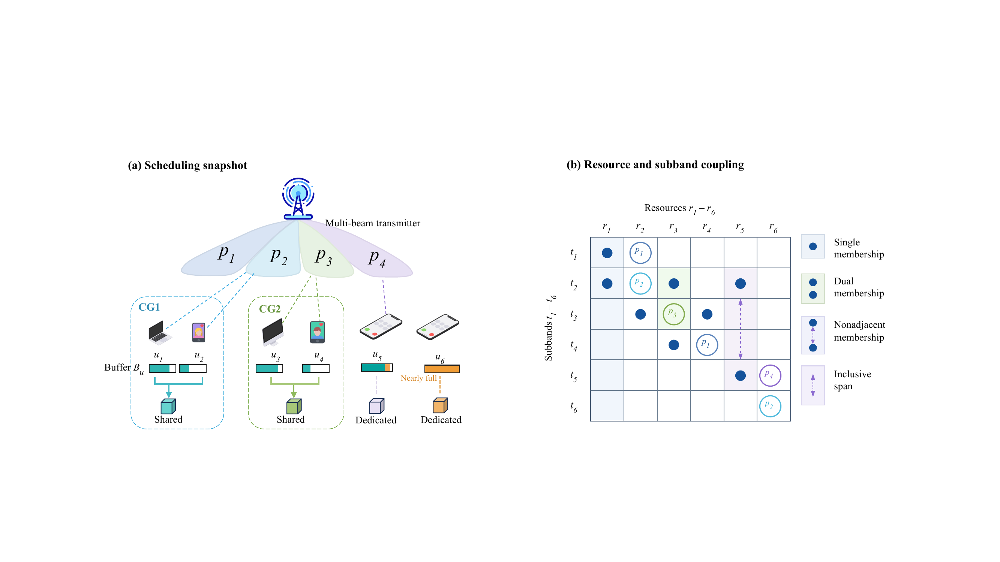

问题建模
波束选择会改变可用速率，资源成员关系会影响共享，缓存上限又会改变每一步的真实收益。任何局部修改，都可能让原本合法的分配越界。
系统模型
决策变量
论文分别定义用户、资源、子带与波束集合。每个用户具有有限缓存、基础链路质量与逐波束能力；每个资源显式属于一至两个子带，两个成员可以不相邻。
查看完整符号表
符号与角色
| 符号 | 含义 | 在模型中的角色 |
|---|---|---|
| 用户 | 被服务的有限缓存业务实体 | |
| 资源 | 承载用户分配的离散资源块 | |
| 子带 | 资源显式属于一至两个子带 | |
| 波束 | 受全局预算与子带掩码共同约束 | |
| 资源的子带成员集合 | 包含一至两个子带，成员可以不相邻 | |
| 资源成员的含端点跨度 | 归一化所选波束能力 | |
| 全局波束预算 | 限制所有子带上的激活总数 | |
| 用户 u 的缓存 | 限制该用户可计入目标的最大传输量 | |
| 用户 u 的基础链路质量 | 与波束能力共同形成有效链路值 | |
| 用户—波束能力 | 描述用户 u 在波束 p 下的适配度 | |
| 子带—波束激活 | 取二值并决定每个子带的波束掩码 | |
| 第 m 个兼容组 | 限定合法的多用户共享集合 | |
| 资源 r 的用户集合 | 必须满足兼容组与共享人数约束 | |
| 所选波束的归一化能力 | 连接激活决策与有效链路值 | |
| 用户—资源有效链路值 | 综合基础质量、共享惩罚与所选能力 | |
| 确定性流量映射 | 把有效链路值映射为离散可交付流量 | |
| 外部截止时间 | 迟到、非法或失败输出均计零效用 |
展开完整系统模型
资源跨度采用首个到最后一个成员的含端点距离。
总激活数受全局预算限制；非空资源必须在每个成员子带上至少激活一个波束。
空集和单用户始终合法；多用户共享必须完全位于同一兼容组内。
所选能力仅累加资源成员子带上的已激活波束，并按成员跨度归一化。
有效链路值同时计入基础质量、共享人数惩罚和所选能力占比。
优化目标
目标函数
受缓存截断的可交付流量目标
式（6）先在用户维度进行缓存截断，再汇总实际可交付流量；只有通过全部约束并在外部截止前完成序列化的输出才获得正效用。
有限组合优化问题
式（7）中的约束（2）与（3）分别对应上方的激活预算和合法共享域；有限缓存与硬截止共同构成交付契约。
展开确定性阶梯映射
| 0 | 8 | 24 | 90 | 120 | 162 | 222 |
6 类耦合约束
约束结构
无线激活决定可用能力，资源共享决定组合合法性，交付契约再把有限缓存与硬截止时间施加到完整输出上。
无线激活
- 全局波束预算
- 子带波束掩码
链路与共享
- 阶梯式链路自适应
- 兼容组共享约束
交付契约
- 有限用户缓存
- 硬截止时间

为什么需要 FPTR
设计动机
如果细化直接写入当前解，超时或验证失败时可能只留下一个半成品。FPTR 把候选解隔离开，让失败只损失这次尝试，不损坏已经可用的结果。
直接修改 live solution
局部编辑 → 尚未修复全部约束 → 计时结束 → 当前解不可发布。
隔离候选 + 事务门
当前可行解保持不变 → 私有候选完成并验证 → 通过则整体提交，否则整体丢弃。